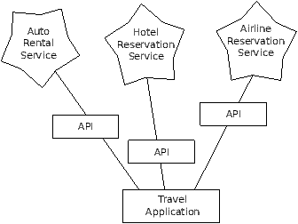

Once it became easy to retrieve documents and parse documents
over HTTP using programs, it did not take long to develop
an approach where we started producing documents that were specifically
designed to be consumed by other
programs (i.e. not HTML to be displayed in a browser).
There are two common formats that we use when exchanging data across the web.
The "eXtensible Markup Language" or XML has been in use for a very long time
and is best suited for exchanging document-style data. When programs just want
to exchange dictionaries, lists, or other internal information with each other,
they use JavaScript Object Notation or JSON (see www.json.org).
We will look at both formats.
13.1 eXtensible Markup Language - XML
XML looks very similar to HTML, but XML is more structured
than HTML. Here is a sample of an XML document:
<person>
<name>Chuck</name>
<phone type="intl">
+1 734 303 4456
</phone>
<email hide="yes"/>
</person>
Often it is helpful to think of an XML document as a tree structure
where there is a top tag person and other tags such as phone
are drawn as children of their parent nodes.
13.2 Parsing XML
Here is a simple application that parses some XML
and extracts some data elements from the XML:
import xml.etree.ElementTree as ET
data = "'
<person>
<name>Chuck</name>
<phone type="intl">
+1 734 303 4456
</phone>
<email hide="yes"/>
</person>"'
tree = ET.fromstring(data)
print 'Name:',tree.find('name').text
print 'Attr:',tree.find('email').get('hide')
Calling fromstring converts the string representation
of the XML into a 'tree' of XML nodes. When the
XML is in a tree, we have a series of methods which we can call to
extract portions of data from the XML.
The find function searches through the
XML tree and retrieves a node that matches the specified tag.
Each node can have some text, some attributes (i.e. like hide) and
some "child" nodes. Each node can be the top of a tree of nodes.
Name: Chuck
Attr: yes
Using an XML parser such as ElementTree has the advantage
that while the XML in this example is quite simple, it turns
out there are many rules regarding valid XML and using
ElementTree allows us to extract data from XML without
worrying about the rules of XML syntax.
13.3 Looping through nodes
Often the XML has multiple nodes and we need to write a loop
to process all of the nodes. In the following program,
we loop through all of the user nodes:
import xml.etree.ElementTree as ET
input = "'
<stuff>
<users>
<user x="2">
<id>001</id>
<name>Chuck</name>
</user>
<user x="7">
<id>009</id>
<name>Brent</name>
</user>
</users>
</stuff>"'
stuff = ET.fromstring(input)
lst = stuff.findall('users/user')
print 'User count:', len(lst)
for item in lst:
print 'Name', item.find('name').text
print 'Id', item.find('id').text
print 'Attribute', item.get('x')
The findall method retrieves a Python list of sub-trees that
represent the user structures in the XML tree. Then we can
write a for loop that looks at each of the user nodes, and
prints the name and id text elements as well as the
x attribute from the user node.
User count: 2
Name Chuck
Id 001
Attribute 2
Name Brent
Id 009
Attribute 7
13.4 JavaScript Object Notation - JSON
The JSON format was inspired by the object and array format used in the JavaScript
language. But since Python was invented before JavaScript, Python's syntax
for dictionaries and lists influenced the syntax of JSON. So the format of JSON
is nearly identical to a combination of Python lists and dictionaries.
Here is a JSON encoding that is roughly equivalent to the simple XML from above:
{
"name" : "Chuck",
"phone" : {
"type" : "intl",
"number" : "+1 734 303 4456"
},
"email" : {
"hide" : "yes"
}
}
You will notice some differences. First, in XML, we can add attributes like
"intl" to the "phone" tag. In JSON we simply have key-value pairs. Also
the XML "person" tag is gone, replaced by a set of outer curly-braces.
In general JSON structures are simpler than XML because JSON has less capabilities
than XML. But JSON has the advantage that it maps directly to some combination
of dictionaries and lists. And since nearly all programming languages
have something equivalent to Python's dictionaries and lists, JSON is a very
natural format to have two cooperating programs exchange data.
JSON is quickly becoming the format of choice for nearly all data exchange between
applications because of its relative simplicity compared to XML.
13.5 Parsing JSON
We construct our JSON by nesting dictionaries (objects) and lists as needed. In
this example we represent a list of users where each user is a set of
key value pairs (i.e. a dictionary). So we have a list of dictionaries.
In the following program, we use the built-in json library parse
the JSON and read through the data. Compare this closely to the equivalent
XML data and code above. The JSON has less detail so we must know in advance
that we are getting a list, and the list is of users and each user is a set of
key value pairs. The JSON is more succinct (an advantage) but also is
less self-describing (a disadvantage).
import json
input = "'
[
{ "id" : "001",
"x" : "2",
"name" : "Chuck"
} ,
{ "id" : "009",
"x" : "7",
"name" : "Chuck"
}
]"'
info = json.loads(input)
print 'User count:', len(info)
for item in info:
print 'Name', item['name']
print 'Id', item['id']
print 'Attribute', item['x']
If you compare the code to extract data from the parsed JSON and XML
you will see that what we get from json.loads()
is a Python list which we traverse with
a for loop and each item within that list
is a Python dictionary which we use the Python
index operator to extract the various bits of each user. Once the JSON has
been parsed - we simply have native Python objects and structures. We don't
have to use the JSON library to dig through the parsed JSON since the returned
data is simply native Python structures.
The output of this program is exactly the same as the XML version above.
User count: 2
Name Chuck
Id 001
Attribute 2
Name Brent
Id 009
Attribute 7
In general, there is an industry trend away from XML and towards JSON for
web services. Because the JSON is simpler and more directly maps to native
data structures we already have in programming languages, the parsing
and data extraction code is usually simpler and more direct when using JSON.
But XML is more self-descriptive than JSON and so there are
some applications where XML retains an advantage. For example, most word
processors store documents internally using XML rather than JSON.
13.6 Application Programming Interfaces (API)
We now have the ability to exchange data between applications using HyperText
Transport Protocol (HTTP) and a way to represent complex data that we are
sending back and forth between these applications using eXtensible
Markup Language (XML) or JavaScript Object Notation (JSON).
The next step is to begin to define and document "contracts" between
applications using these techniques. The general name for these
application-to-application contracts is Application Program
Interfaces or APIs. When we use an API, generally one program
makes a set of services available for use by other applications
and publishes the APIs (i.e. the "rules") that must be followed to
access the services provided by the program.
When we begin to build our programs where the functionality of
our program includes access to services provided by other programs,
we call the approach a Service-Oriented Architecture or SOA.
A SOA approach is one where our overall application makes use of
the services of other applications. A non-SOA approach is where the
application is a single stand-alone application which contains all of the
code necessary to implement the application.
We see many examples of SOA when we use the web. We can go to a single
web site and book air travel, hotels, and automobiles all from a
single site. The data for hotels is not stored on the airline computers.
Instead, the airline computers contact the services on the hotel computers
and retrieve the hotel data and present it to the user. When the user
agrees to make a hotel reservation using the airline site, the airline site uses
another web service on the hotel systems to actually make the reservation.
And when it comes to charge your credit card for the whole transaction,
still other computers become involved in the process.

A Service-Oriented Architecture has many advantages including: (1) we
always maintain only one copy of data - this is particularly important
for things like hotel reservations where we do not want to over-commit
and (2) the owners of the data can set the rules about the use of their
data. With these advantages, a SOA system must be carefully designed
to have good performance and meet the user's needs.
When an application makes a set of services in its API available over the web,
we call these web services.
13.7 Google geocoding web service
Google has an excellent web service that allows us to make use of their
large database of geographic information. We can submit a geographical
search string like "Ann Arbor, MI" to their geocoding API and have Google
return its best guess as to where on a map we might find our search string and
tells us about the landmarks nearby.
The geocoding service is free but rate limited so you cannot make unlimited
use of the API in a commercial application. But if you have some survey data
where an end-user has entered a location in a free-format input box, you can use
this API to clean up your data quite nicely.
When you are using a free API like Google's geocoding API, you need
to be respectful in your use of these resources. If too many people abuse the
service, Google might drop or significantly curtail its free service.
You can read the online documentation for this service, but it is quite simple
and you can even test it using a browser by typing the following URL into your
browser:
http://maps.googleapis.com/maps/api/geocode/json?sensor=false &address=Ann+Arbor%2C+MI
Make sure to un-wrap the URL and remove any spaces from the URL before pasting
it into your browser.
The following is a simple application to prompt the user for a search string
and call the Google geocoding API and extract information from the returned
JSON.
import urllib
import json
serviceurl = 'http://maps.googleapis.com/maps/api/geocode/json?'
while True:
address = raw_input('Enter location: ')
if len(address) < 1 : break
url = serviceurl + urllib.urlencode({'sensor':'false',
'address': address})
print 'Retrieving', url
uh = urllib.urlopen(url)
data = uh.read()
print 'Retrieved',len(data),'characters'
try: js = json.loads(str(data))
except: js = None
if 'status' not in js or js['status'] != 'OK':
print '==== Failure To Retrieve ===='
print data
continue
print json.dumps(js, indent=4)
lat = js["results"][0]["geometry"]["location"]["lat"]
lng = js["results"][0]["geometry"]["location"]["lng"]
print 'lat',lat,'lng',lng
location = js['results'][0]['formatted_address']
print location
The program takes the search string and constructs a URL with the
search string as a properly encoded parameter and then uses
urllib to retrieve the text from the Google geocoding API.
Unlike a fixed web page, the data we get depends on the parameters
we send and the geographical data stored in Google's servers.
Once we retrieve the JSON data, we parse it with the json
library and do a few checks to make sure that we received good data
and then extract the information that we are looking for.
The output of the program is as follows (some of the returned
JSON has been removed):
$ python geojson.py
Enter location: Ann Arbor, MI
Retrieving http://maps.googleapis.com/maps/api/
geocode/json?sensor=false&address=Ann+Arbor%2C+MI
Retrieved 1669 characters
{
"status": "OK",
"results": [
{
"geometry": {
"location_type": "APPROXIMATE",
"location": {
"lat": 42.2808256,
"lng": -83.7430378
}
},
"address_components": [
{
"long_name": "Ann Arbor",
"types": [
"locality",
"political"
],
"short_name": "Ann Arbor"
}
],
"formatted_address": "Ann Arbor, MI, USA",
"types": [
"locality",
"political"
]
}
]
}
lat 42.2808256 lng -83.7430378
Ann Arbor, MI, USA
Enter location:
You can download
www.py4inf.com/code/geojson.py and
www.py4inf.com/code/geoxml.py to explore the JSON
and XML variants of the Google geocoding API.
13.8 Security and API usage
It is quite common that you need some kind of
"API key" to make use of a vendor's API. The
general idea is that they want to know who is using
their services and how much each user is using.
Perhaps they have free and pay tiers of their services
or have a policy that limits the number of requests
that a single individual can during a particular
time period.
Sometimes once you get your API key, you simply include
the key as part of POST data or perhaps as a parameter
on the URL when calling the API.
Other times, the vendor wants increased assurance of
the source of the requests and so they add expect you
to send cryptographically signed messages using shared
keys and secrets. A very common technology that is used
to sign requests over the Internet is called OAuth.
You can read more about the OAuth protocol at
http://www.oauth.net.
As the Twitter API became increasingly valuable, Twitter
went from an open and public API to an API that required
the use of OAuth signatures on each API request. Thankfully
there are a number of convenient and free OAuth libraries
are available
so you can avoid writing an OAuth implementation from scratch
by reading the specification. These libraries are of
varying complexity and have varying
richness. The OAuth web site has information about various
OAuth libraries.
For this next sample program we will download these files:
twurl.py, hidden.py,
oauth.py,
and
twitter1.py from
www.py4inf.com/code and put them all in a folder
on your computer.
To make use of these programs you will need to have a Twitter
account, and authorize your Python code as an application,
set up a key, secret, token and token secret. You will edit
the file hidden.py and put these four strings into the
appropriate variables in the file:
def auth() :
return { "consumer_key" : "h7L...GNg",
"consumer_secret" : "dNK...7Q",
"token_key" : "101...GI",
"token_secret" : "H0yM...Bo" }
The Twitter web service are accessed using a URL like this:
https://api.twitter.com/1.1/statuses/user_timeline.json
But once all of the security information has been added, the URL
will look more like:
https://api.twitter.com/1.1/statuses/user_timeline.json?count=2
&oauth_version=1.0&oauth_token=101...SGI&screen_name=drchuck
&oauth_nonce=09239679&oauth_timestamp=1380395644
&oauth_signature=rLK...BoD&oauth_consumer_key=h7Lu...GNg
&oauth_signature_method=HMAC-SHA1
You can read the OAuth specification if you want to
know more about the meaning of the various parameters that
are added to meet the security requirements of OAuth.
For the programs we run with Twitter, we hide all the
complexity in the files oauth.py and twurl.py.
We simply set the secrets in hidden.py and then
send the desired URL to the twurl.augment()
function and the library code adds all the necessary
parameters to the URL for us.
This program (twitter1.py) retrieves the timeline
for a particular Twitter user and returns it to us in JSON
format in a string. We simply print the first 250 characters
of the string:
import urllib
import twurl
TWITTER_URL='https://api.twitter.com/1.1/statuses/user_timeline.json'
while True:
print "
acct = raw_input('Enter Twitter Account:')
if ( len(acct) < 1 ) : break
url = twurl.augment(TWITTER_URL,
{'screen_name': acct, 'count': '2'} )
print 'Retrieving', url
connection = urllib.urlopen(url)
data = connection.read()
print data[:250]
headers = connection.info().dict
# print headers
print 'Remaining', headers['x-rate-limit-remaining']
When the program runs it produces the following output:
Enter Twitter Account:drchuck
Retrieving https://api.twitter.com/1.1/ ...
[{"created_at":"Sat Sep 28 17:30:25 +0000 2013","
id":384007200990982144,"id_str":"384007200990982144",
"text":"RT @fixpert: See how the Dutch handle traffic
intersections: http:\/\/t.co\/tIiVWtEhj4\n#brilliant",
"source":"web","truncated":false,"in_rep
Remaining 178
Enter Twitter Account:fixpert
Retrieving https://api.twitter.com/1.1/ ...
[{"created_at":"Sat Sep 28 18:03:56 +0000 2013",
"id":384015634108919808,"id_str":"384015634108919808",
"text":"3 months after my freak bocce ball accident,
my wedding ring fits again! :)\n\nhttps:\/\/t.co\/2XmHPx7kgX",
"source":"web","truncated":false,
Remaining 177
Enter Twitter Account:
Along with the returned timeline data, Twitter also returns
metadata about the request in the HTTP response headers.
One header in particular, x-rate-limit-remaining informs
us how many more requests we can make before we will be shut
off for a short time period. You can see that our remaining
retrievals drop by one each time we make a request to the
API.
In the following example, we retrieve a user's Twitter friends
and parse the returned JSON and extract some of the information
about the friends. We also dump the JSON after parsing and
"pretty-print" it with an indent of four characters to allow
us to pore through the data when we want to extract more fields.
import urllib
import twurl
import json
TWITTER_URL = 'https://api.twitter.com/1.1/friends/list.json'
while True:
print "
acct = raw_input('Enter Twitter Account:')
if ( len(acct) < 1 ) : break
url = twurl.augment(TWITTER_URL,
{'screen_name': acct, 'count': '5'} )
print 'Retrieving', url
connection = urllib.urlopen(url)
data = connection.read()
headers = connection.info().dict
print 'Remaining', headers['x-rate-limit-remaining']
js = json.loads(data)
print json.dumps(js, indent=4)
for u in js['users'] :
print u['screen_name']
s = u['status']['text']
print ' ',s[:50]
Since the JSON becomes a set of nested Python lists and dictionaries,
we can use a combination of the index operation and for loops to
wander through the returned data structures with very little
Python code.
The output of the program looks as follows (some of the data items
are shortened to fit on the page):
Enter Twitter Account:drchuck
Retrieving https://api.twitter.com/1.1/friends ...
Remaining 14
{
"next_cursor": 1444171224491980205,
"users": [
{
"id": 662433,
"followers_count": 28725,
"status": {
"text": "@jazzychad I just bought one .__.",
"created_at": "Fri Sep 20 08:36:34 +0000 2013",
"retweeted": false,
},
"location": "San Francisco, California",
"screen_name": "leahculver",
"name": "Leah Culver",
},
{
"id": 40426722,
"followers_count": 2635,
"status": {
"text": "RT @WSJ: Big employers like Google ...",
"created_at": "Sat Sep 28 19:36:37 +0000 2013",
},
"location": "Victoria Canada",
"screen_name": "_valeriei",
"name": "Valerie Irvine",
],
"next_cursor_str": "1444171224491980205"
}
leahculver
@jazzychad I just bought one .__.
_valeriei
RT @WSJ: Big employers like Google, AT&T are h
ericbollens
RT @lukew: sneak peek: my LONG take on the good &a
halherzog
Learning Objects is 10. We had a cake with the LO,
scweeker
@DeviceLabDC love it! Now where so I get that "etc
Enter Twitter Account:
The last bit of the output is where we see the for loop reading the
five most recent "friends" of the drchuck Twitter account
and printing the most recent status for each friend. There is a
great deal more data available in the returned JSON. Also if you look
in the output of the program, you can see that the "find the friends"
of a particular account has a different rate limitation than
the number of timeline queries we are allowed to run per time period.
These secure API keys allow Twitter to have solid confidence that they
know who is using their API and data and at what level. The rate
limiting approach allows us to do simple, personal data retrievals but
does not allow us to build a product that pulls data from their API
millions of times per day.
13.9 Glossary
- API:
- Application Program Interface - A contract between
applications that defines the patterns of interaction between
two application components.
- ElementTree:
- A built-in Python library used to parse XML data.
- JSON:
- JavaScript Object Notation- A format that allows for
the markup of structured data based on the syntax of JavaScript
Objects.
- REST:
- REpresentational State Transfer - A style of Web Services
that provide access to resources within an application using the HTTP
protocol.
- SOA:
- Service Oriented Architecture - when an application is
made of components connected across a network.
- XML:
- eXtensible Markup Language - A format that allows for
the markup of structured data.
Exercise 1
Change either the
www.py4inf.com/code/geojson.py or
www.py4inf.com/code/geoxml.py to print out the
two-character country code from the retrieved data.
Add error checking so your program does not traceback
if the country code is not there. Once you have it
working, search for "Atlantic Ocean" and make sure
it can handle locations that are not in any country.